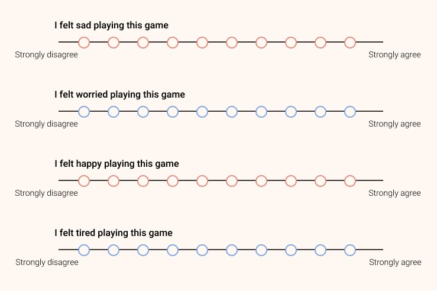

This project started with the opportunity to work on my master thesis with Loïc Caroux, at the University Jean Jaurès at Toulouse.
One of his many academic research topics was the study of video games, I then asked him to collaborate on a paper on the intersection between HCI and gaming.
My focus was to work on the effects of music on user experience and performance in video games.
Role : One-man UX Research team, supervised by Loïc Caroux
Methodology : Secondary Research, Observation, Questionnaire,
Statistical Analysis
Tools : Excel
Time : Approx. 6 months
At the time of writing, there was no real consensus regarding the effects and perception of music in the scientific literature. Sometimes described as a source of distraction but also as an aesthetic stimulus, the effects of music greatly differ depending on the listening context and the material presented. This difference is even more evident in the field of video games, although the vast majority of studies on this subject are focused on only driving games.
I wanted to find new insights regarding different types of games, mostly because I felt this theme was seldom explored, and also for the novelty of it! Also, I tested different types of music to tweak the level of what is called "arousal." This variable affecting any music, or any stimuli in general, covers several aspects, such as its complexity, its familiarity, rhythm and so on. A "high-arousal" type of music will typically be defined as requiring more cognitive resources to be processed and enjoyed, compared to a "low-arousal" type of music.
So what I wanted to find out was :
• What happens when you play a game while listening to a piece of music
you picked yourself versus one picked by an experimenter? Does
it change anything and affect on your performance? And on your user
experience?
• Is there a difference between playing video games and listening to
"high-arousal" music or "low-arousal" music?
• Do those elements change depending on the type of game played? Is
there some kind of "matching" effect, where high-arousal music
and high-arousal games provide together the best-combined user
experience?
The songs I used were Distractions from Zero 7 as low-arousal, and Attitude from Sepultura as a high-arousal, to stay consistent with several studies done on the topic.
The games I used were World of Goo and Geometry Wars 3. The reason is simple: Geometry Wars 3 has a dynamic system, where the environment is constantly changing whether you enter input or not, whereas World of Goo has a static environment, which only changes when you enter an input.
To recruit participants, I went full guerilla and just asked people around my campus to come and play games!
Looking back at it, it was my first attempt at some sort of guerilla testing. Going around the university and picking people was quite challenging but I quickly gathered 20 participants in a few hours of scouting. Nevertheless, one obvious bias is that I only recruited students, which may have impacted the data. That's one thing I would change if I had to do it again.
The test plan was simple: Users were randomly assigned an order in which they played both games in all the conditions. And after each session, their performance was recorded (their score in Geometry Wars 3, and their time finishing a puzzle in World of Goo), and they filled a short enjoyment questionnaire. I analyzed the whole data using Excel.
Results were" interesting", in the sense that we did not exactly find what we expected to find :
• Performance was unaffected in all cases, so music didn't seem to have
any effect here.
• But! There was a higher enjoyment expressed with
self-selected music, compared to experimenter-picked music.
• Also, there was some matching between the levels of
arousal in music and games, where the high-arousal music provided a
better experience in the high-arousal game, and vice-versa.
In the end, what I've gathered from this work, apart from the fact that it was, you know, academically required, was that there is still a lot of opportunities for academia to focus on video games and its effects on user experience. Gaming is definitely one of my biggest passion, and I truly appreciated starting my UX journey on such a project!
This also granted me a publication as my work was later presented at the Congress of the International Ergonomics Association IEA 2018 held in Florence, you can read it here.
Want to read more cases?
How about an article my experience at Testapic ?